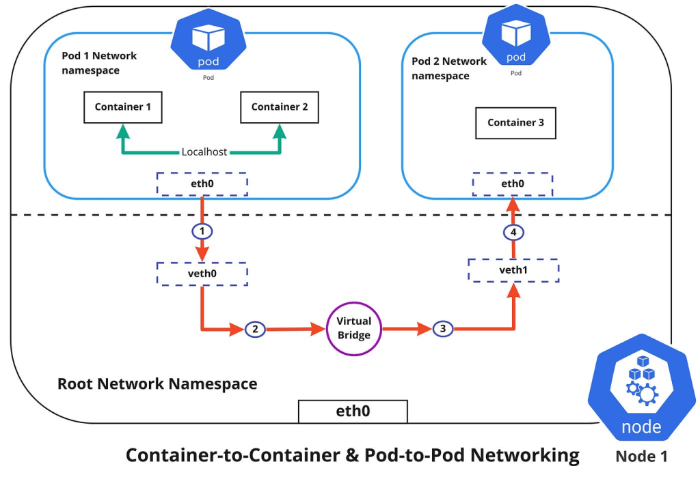

How Pods in Containers in Kubernetes Communicate with Each Other

Kubernetes, an open-source container orchestration platform, simplifies the deployment, scaling, and management of containerized applications. One of the fundamental aspects of managing applications in Kubernetes is understanding how pods, the smallest deployable units in Kubernetes, communicate with each other over the network. This blog post will guide you through the key concepts and mechanisms that enable pod-to-pod communication in Kubernetes.
Understanding Kubernetes Networking Basics
Kubernetes networking is built on a set of core principles designed to ensure smooth communication between pods:
-
Each Pod has a Unique IP: Every pod in a Kubernetes cluster is assigned a unique IP address. This IP address is allocated from the cluster's IP address range and allows pods to communicate with each other directly.
-
Flat Network: Kubernetes aims to provide a flat networking model where all pods can communicate with each other without NAT (Network Address Translation). This ensures a simple and consistent network topology.
-
Pod-to-Pod Communication: Pods can communicate with each other using their IP addresses. Kubernetes uses the Container Network Interface (CNI) plugins to manage network configurations and ensure that pod IP addresses are routable within the cluster.
Key Networking Components in Kubernetes
-
CNI Plugins: Kubernetes relies on CNI plugins to configure network interfaces for pods and manage the underlying network. Popular CNI plugins include Calico, Flannel, Weave, and Cilium. These plugins handle tasks like IP address allocation, routing, and network policy enforcement.
-
Kube-proxy: Kube-proxy is a network proxy that runs on each node in the Kubernetes cluster. It manages network rules and load balances traffic to services, enabling pods to discover and communicate with each other via service endpoints.
-
Service: A Kubernetes Service is an abstraction that defines a logical set of pods and a policy by which to access them. Services provide a stable endpoint (ClusterIP) for pod communication, abstracting the underlying pod IP addresses that might change.
Pod-to-Pod Communication Mechanisms
- Direct Pod IP Communication: Pods can communicate directly using their IP addresses. For example, if Pod A knows the IP address of Pod B, it can send requests directly to that IP address. This method is straightforward but requires knowledge of the target pod's IP address.
apiVersion: v1
kind: Pod
metadata:
name: pod-a
spec:
containers:
- name: container-a
image: my-app
apiVersion: v1
kind: Pod
metadata:
name: pod-b
spec:
containers:
- name: container-b
image: my-app
-
Service Discovery with Environment Variables: Kubernetes automatically injects environment variables into pods for each service, which can be used for discovering service endpoints.
-
Service Discovery with DNS: Kubernetes includes an internal DNS service that automatically creates DNS records for Kubernetes services. Pods can communicate with each other using service names, which are resolved to the appropriate pod IP addresses by the DNS service.
apiVersion: v1
kind: Service
metadata:
name: my-service
spec:
selector:
app: my-app
ports:
- protocol: TCP
port: 80
targetPort: 8080
-
ClusterIP Service: The ClusterIP service provides a stable internal IP address that pods can use to communicate with a group of pods behind the service.
-
Headless Service: A Headless Service (ClusterIP: None) enables direct pod-to-pod communication by returning the individual pod IPs without a stable IP address, useful for stateful applications like databases.
apiVersion: v1
kind: Service
metadata:
name: headless-service
spec:
clusterIP: None
selector:
app: my-app
ports:
- protocol: TCP
port: 80
targetPort: 8080
- Network Policies: Network policies allow you to control the traffic flow between pods. You can define rules to specify which pods can communicate with each other, enhancing security within the cluster.
apiVersion: networking.k8s.io/v1
kind: NetworkPolicy
metadata:
name: allow-specific-traffic
spec:
podSelector:
matchLabels:
app: my-app
ingress:
- from:
- podSelector:
matchLabels:
role: frontend
Conclusion
Kubernetes provides a robust networking model that simplifies pod-to-pod communication. By leveraging CNI plugins, services, and DNS, Kubernetes ensures that your applications can communicate seamlessly within the cluster. Understanding these networking principles and components is crucial for designing, deploying, and managing scalable and resilient applications in Kubernetes.
With this knowledge, you can confidently build and operate complex microservices architectures, ensuring efficient and secure communication between your containerized applications.
Imported from rifaterdemsahin.com · 2024